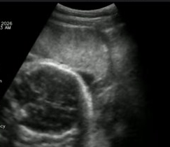
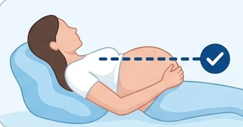
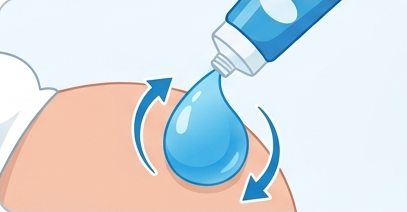
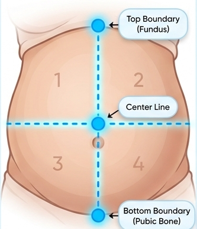
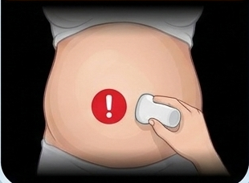
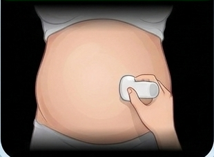

<!DOCTYPE html>
<html lang="en">
<head>
  <meta charset="UTF-8">
  <meta name="viewport" content="width=device-width, initial-scale=1.0, maximum-scale=1.0, user-scalable=no">
  <title>Pulsenmore Home Ultrasound Training | AFV-Dynamic Study (Bilingual EN/HE)</title>
  <meta name="description" content="Interactive simulated training for the Pulsenmore Home Ultrasound AFV-Dynamic Study (CLR-E2994) in English and Hebrew.">
  <link rel="preconnect" href="https://fonts.googleapis.com">
  <link rel="preconnect" href="https://fonts.gstatic.com" crossorigin>
  <link href="https://fonts.googleapis.com/css2?family=Assistant:wght@400;500;600;700;800&family=Heebo:wght@300;400;500;600;700;800;900&family=Outfit:wght@300;400;500;600;700;800;900&family=Plus+Jakarta+Sans:wght@400;500;600;700;800&family=Poppins:wght@400;500;600;700&display=swap" rel="stylesheet">
  <link rel="stylesheet" href="style.css">
  
  <!-- Local Vendor Scripts (100% Offline & File:// Compatibility) -->
  <script src="vendor/react.production.min.js"></script>
  <script src="vendor/react-dom.production.min.js"></script>
  <script src="vendor/babel.min.js"></script>
  
  <!-- CDN Fallbacks if vendor folder is not present -->
  <script>
    if (!window.React) {
      document.write('<script src="https://unpkg.com/react@18/umd/react.production.min.js"><\/script>');
      document.write('<script src="https://unpkg.com/react-dom@18/umd/react-dom.production.min.js"><\/script>');
      document.write('<script src="https://unpkg.com/@babel/standalone/babel.min.js"><\/script>');
    }
  </script>
</head>
<body>

  <!-- React Mount Point -->
  <div id="root"></div>

  <!-- Inlined React Application Source (Zero CORS issues on file:// protocol) -->
  <script type="text/babel">
/**
 * Pulsenmore AFV-Dynamic Study Training Web Application
 * Unified Phone-First Architecture: All 14 Slides Fitted to Mobile Resolution
 * Fully Bilingual (English & Hebrew) + Web Audio API + Ronit Feedback Enhancements
 */

const { useState, useEffect, useRef, useMemo, useCallback, createContext, useContext } = React;

// ==========================================================================
// 1. Audio Synthesizer (Web Audio API)
// ==========================================================================
class SoundFX {
  constructor() {
    this.ctx = null;
    this.heartbeatInterval = null;
    this.soundEnabled = true;
  }

  init() {
    if (!this.ctx) {
      const AudioContext = window.AudioContext || window.webkitAudioContext;
      if (AudioContext) {
        this.ctx = new AudioContext();
      }
    }
    if (this.ctx && this.ctx.state === 'suspended') {
      this.ctx.resume();
    }
  }

  toggleSound(enabled) {
    this.soundEnabled = enabled !== undefined ? enabled : !this.soundEnabled;
    if (!this.soundEnabled && this.heartbeatInterval) {
      this.stopHeartbeat();
    }
    return this.soundEnabled;
  }

  playClick() {
    if (!this.soundEnabled) return;
    this.init();
    if (!this.ctx) return;
    try {
      const osc = this.ctx.createOscillator();
      const gain = this.ctx.createGain();
      osc.type = 'sine';
      osc.frequency.setValueAtTime(600, this.ctx.currentTime);
      osc.frequency.exponentialRampToValueAtTime(300, this.ctx.currentTime + 0.04);
      gain.gain.setValueAtTime(0.12, this.ctx.currentTime);
      gain.gain.exponentialRampToValueAtTime(0.01, this.ctx.currentTime + 0.04);
      osc.connect(gain);
      gain.connect(this.ctx.destination);
      osc.start();
      osc.stop(this.ctx.currentTime + 0.04);
    } catch(e) {}
  }

  playSuccess() {
    if (!this.soundEnabled) return;
    this.init();
    if (!this.ctx) return;
    try {
      const notes = [523.25, 659.25, 783.99, 1046.50];
      notes.forEach((freq, idx) => {
        const osc = this.ctx.createOscillator();
        const gain = this.ctx.createGain();
        osc.type = 'sine';
        osc.frequency.setValueAtTime(freq, this.ctx.currentTime + idx * 0.08);
        gain.gain.setValueAtTime(0.15, this.ctx.currentTime + idx * 0.08);
        gain.gain.exponentialRampToValueAtTime(0.01, this.ctx.currentTime + idx * 0.08 + 0.35);
        osc.connect(gain);
        gain.connect(this.ctx.destination);
        osc.start(this.ctx.currentTime + idx * 0.08);
        osc.stop(this.ctx.currentTime + idx * 0.08 + 0.35);
      });
    } catch(e) {}
  }

  stopHeartbeat() {
    if (this.heartbeatInterval) {
      clearInterval(this.heartbeatInterval);
      this.heartbeatInterval = null;
    }
  }
}

const soundFX = new SoundFX();

// ==========================================================================
// 2. Bilingual Dataset (English & Hebrew) — Structured per Ronit's Feedback
// ==========================================================================
const TRANSLATIONS = {
  en: {
    protocol: "CLR-E2994",
    studyName: "Assessment of Amniotic Fluid Volume (AFV) and Dynamic Fetal Parameters by Pulsenmore ES Home Ultrasound",
    brandTitle: "Pulsenmore",
    brandSub: "Scan Training • AFV Study",
    soundOn: "🔊 Sound ON",
    soundOff: "🔇 Sound OFF",
    editBtn: "✏️ Edit",
    nextBtn: "Next >",
    prevBtn: "< Previous",
    cancelBtn: "< Back",
    saveBtn: "💾 Save Changes",
    slideLabel: "Slide",
    ofLabel: "of",
    langName: "עברית",
    phaseLabels: ["1. Instructions", "2. Quiz", "3. Practice", "4. Scan"],
    slides: [
      {
        id: 1,
        title: "Home Screen & Start Scan",
        subtitle: "Mobile App AG Mode Initialization",
        calloutText: "This is the home screen. Tapping here will start the scan process.",
        homeMomTitle: "Hi there,\nMom-to-Be!",
        homeMomWeek: "You're in Week 22",
        homeGuideTitle: "Ultrasound Guide",
        homeGuideCard1: "Scan Prep: Step-By-Step",
        homeGuideCard2: "Tips For Successful Scan",
        homeGuideCard3: "Understanding Your Scan",
        homeTimeRemaining: "Total 90 minutes remaining ℹ️",
        homeIphoneStatus: "iPhone status\nOK",
        homeDeviceStatus: "Device status\nConnected"
      },
      {
        id: 2,
        title: "Part 1: Fetal Well-Being",
        subtitle: "Baseline assessment of heartbeat & fetal movements",
        stageBadge: "📖 Part 1 • Introduction",
        description: "Right now, your baby is growing, moving, and getting stronger every day. This first part of the scan lets your care team check your baby's heartbeat and gentle movements. You'll see it all happen, live on your screen.",
        image: "assets/pptx_slides/slide_2_img_1.png"
      },
      {
        id: 3,
        title: "Get ready to practice (Part 1)",
        subtitle: "A quick run through so you know what to expect",
        stageBadge: "📖 Part 1 • Preparation",
        item1: "Sit comfortably & lean back",
        item2: "Apply a generous amount of gel to your tummy & the transducer",
        item3: "Follow the on-screen instructions & keep pace",
        actionBtnText: "Start Part 1 Practice Scan >"
      },
      {
        id: 4,
        title: "Part 1: Practice Scan",
        subtitle: "Guided scanning tutorial",
        partLabel: "🎯 Part 1 • Practice Scan",
        display1Tab: "Step 1: Watch Tutorial",
        d1_calloutTop: "The scanning process includes 5 steps. During each step, the top part will display a guided tutorial.",
        d1_scanStep: "Scan 4/5",
        d1_duration: "25 Seconds",
        d1_tapPrompt: "Tap the red button to start scanning",
        d1_calloutBottom: "Pressing the red button will allow you to start.",
        display2Tab: "Step 2: Active Scan",
        d2_calloutMiddle: "Move the device in the same direction, pace, & position as demonstrated. Maintain good, continuous contact with the skin.",
        d2_backPrompt: "◀ Back"
      },
      {
        id: 5,
        title: "Part 2: Amniotic Fluid (AFV) Assessment",
        subtitle: "This part measures amniotic fluid pockets around your baby. Unlike Part 1, you won't focus on seeing the baby on screen.",
        partLabel: "Part 2 of 2 • New Instructions",
        stageBadge: "📖 AFV Instructions • Overview",
        diffHeader: "What is different in Part 2 (AFV)?",
        diff1Title: "1. Recline Further Back (Horizontal Belly)",
        diff1Desc: "Lean back lower than in Part 1 so gravity helps the amniotic fluid settle into clear pockets.",
        diff2Title: "2. Hold Probe 90° Perpendicular to the Ground",
        diff2Desc: "Keep the device completely upright relative to the floor — do NOT tilt it along the curve of your belly.",
        roadmapText: "🧭 Next Steps: We will review 5 brief instruction screens, answer a 3-question Knowledge Check, and then perform a guided Practice Scan before the real scan.",
        actionBtnText: "Continue to AFV Instructions >"
      },
      {
        id: 6,
        title: "Step 1: Body Positioning & Gel",
        stageBadge: "📖 AFV Instructions • Step 1 of 5",
        panel1Title: "Recline back.",
        panel1Desc: "Slide lower in your seat so your belly is horizontal. Gravity helps settle the fluid.",
        panel2Title: "Apply generous gel.",
        panel2Desc: "Apply to both the device and the sides of your belly for a smooth, continuous ultrasound image."
      },
      {
        id: 7,
        title: "Step 2: Map the Area (4 Quadrants)",
        stageBadge: "📖 AFV Instructions • Step 2 of 5",
        subtitle: "Mentally divide your belly into four quarters. During the scan, you will sweep across each of these four zones individually.",
        quadrants: [
          "Upper Right (RUQ)",
          "Upper Left (LUQ)",
          "Lower Right (RLQ)",
          "Lower Left (LLQ)"
        ],
        actionHint: "ℹ️ Review the 4 belly zones in the diagram above, then tap 'Next >' below to continue the instructions."
      },
      {
        id: 8,
        title: "Step 3: Scan Movement & Pace",
        stageBadge: "📖 AFV Instructions • Step 3 of 5 (Instructional View)",
        subtitle: "Follow the dashed scan lines across your abdomen from the outer side inward toward the center line:",
        point1: "🔵 Start: Place the device at the far outer edge of the quadrant.",
        point2: "🔵 Move: Slide the device slowly inward along the dashed line toward the center line.",
        point3: "🔵 Pace: Each inward sweep should take between 5 and 10 seconds.",
        paceBadge: "⏱️ Pace: 5–10 Seconds per Quadrant Sweep"
      },
      {
        id: 9,
        title: "Step 4: Device Positioning (Crucial)",
        stageBadge: "📖 AFV Instructions • Step 4 of 5",
        alertText: "Hold the device completely upright, 90° perpendicular to the ground. Do NOT tilt it to follow the curve of your belly. The phone screen should face perfectly sideways."
      },
      {
        id: 10,
        title: "Step 5: Live Feedback Alerts",
        stageBadge: "📖 AFV Instructions • Step 5 of 5",
        description: "During the scan, the app monitors your device angle in real time. If you tilt the device too far, a yellow warning appears. Adjust your angle upright (90° to the ground) until the banner turns green.",
        yellowBanner: "⚠️ Keep it Level (Tilted)",
        greenBanner: "✓ You're Doing Great! (90° Upright)"
      },
      {
        id: 11,
        title: "Knowledge Check Questionnaire",
        stageBadge: "📝 Step 2: Knowledge Check (Before Practice Scan)",
        subtitle: "Let's verify your understanding of the AFV instructions before starting the practice scan.",
        q1: "1. How must you hold the ultrasound probe during the Amniotic Fluid (AFV) scan?",
        q1_opts: [
          "Tilted to follow the curve of your belly",
          "Completely upright, perpendicular (90°) to the ground"
        ],
        q2: "2. What can you do to optimize your ultrasound scan quality?",
        q2_opts: [
          "Add generous gel",
          "Maintain firm, continuous skin contact",
          "Sweep slowly (5–10 seconds per quadrant)",
          "All answers are correct"
        ],
        q3: "3. Can you close the app immediately after finishing the scan?",
        q3_opts: [
          "Yes, right away",
          "No, wait for the 100% scan upload confirmation"
        ],
        submitBtn: "Check Answers",
        passedBtn: "✓ Passed! Proceed to Practice Scan >",
        passedFeedback: "Great job! You completed all instructions and the quiz. Next is the AFV Practice Scan.",
        errorMsg: "Some answers need correction. Remember: hold the probe 90° perpendicular to the ground, use all optimization tips, and wait for upload confirmation."
      },
      {
        id: 12,
        title: "AFV Practice Scan",
        stageBadge: "🎯 Step 3: AFV Practice Scan",
        introTitle: "Ready for Your AFV Practice Scan",
        introSubtitle: "You've completed the instructions and knowledge check! Let's do a quick practice run before the real scan.",
        recap1: "Recline back so your belly is horizontal",
        recap2: "Hold the probe completely upright — 90° perpendicular to the ground",
        recap3: "Sweep slowly from the outer edge inward (5–10s per quadrant)",
        startPracticeBtn: "🎯 Start Practice Scan",
        activeBanner: "✓ You're Doing Great! Probe is 90° Perpendicular",
        activeStepLabel: "Practice Scan • Quadrant 1/4 (5–10s inward sweep)",
        greatPracticeTitle: "Great practice! Everything's in place.",
        greatPracticeSub: "You kept the probe perpendicular to the ground and maintained a steady inward sweep. You're ready for the real assessment!",
        readyRealScanBtn: "I'm ready to scan >",
        repeatPracticeBtn: "↺ Practice Again"
      },
      {
        id: 13,
        title: "Processing & Uploading",
        stageBadge: "☁️ Step 4: Real Scan Upload",
        calloutText: "After completing the real scan, please wait patiently until all clips finish processing and uploading.",
        pleaseWait: "Please wait,",
        uploading: "procedure uploading",
        caution: "Do not close or minimize the app while uploading",
        processing: "Processing 100%"
      },
      {
        id: 14,
        title: "Congratulations! Training Complete",
        badgeText: "Congratulations! You have completed the AFV training!",
        logoText: "Pulsenmore Home Ultrasound",
        closingText: "Your scan data will be securely sent and awaits interpretation by your healthcare provider. You can relax knowing you are prepared to perform the AFV scan accurately. Thank you for participating in the study.",
        restartBtn: "🔄 Repeat Training",
        closeBtn: "✕ Close Training",
        closedMessage: "Training completed. You may now close this window."
      }
    ]
  },
  he: {
    protocol: "CLR-E2994",
    studyName: "הערכת כמות מי שפיר (AFV) ומדדים עובריים דינמיים באמצעות מכשיר אולטרסאונד ביתי Pulsenmore ES",
    brandTitle: "פולסנמור",
    brandSub: "הדרכת סריקה • מחקר AFV",
    soundOn: "🔊 שמע פעיל",
    soundOff: "🔇 שמע כבוי",
    editBtn: "✏️ עריכה",
    nextBtn: "הבא >",
    prevBtn: "< הקודם",
    cancelBtn: "< חזרה",
    saveBtn: "💾 שמירה",
    slideLabel: "שקף",
    ofLabel: "מתוך",
    langName: "English",
    phaseLabels: ["1. הדרכה", "2. שאלון", "3. תרגול", "4. סריקה"],
    slides: [
      {
        id: 1,
        title: "מסך הבית והתחלת סריקה",
        subtitle: "אתחול האפליקציה במצב מודרך (AG Mode)",
        calloutText: "זהו מסך הבית. לחיצה על עיגול ה-START תתחיל את תהליך הסריקה.",
        homeMomTitle: "שלום לך,\nאמא לעתיד!",
        homeMomWeek: "את בשבוע 22",
        homeGuideTitle: "מדריך אולטרסאונד",
        homeGuideCard1: "הכנה לסריקה: צעד אחר צעד",
        homeGuideCard2: "טיפים לסריקה מוצלחת",
        homeGuideCard3: "הבנת הסריקה שלך",
        homeTimeRemaining: "נותרו 90 דקות בסך הכל ℹ️",
        homeIphoneStatus: "סטטוס אייפון:\nתקין",
        homeDeviceStatus: "סטטוס מכשיר:\nמחובר"
      },
      {
        id: 2,
        title: "חלק 1: ניטור חיוניות העובר",
        subtitle: "הערכת בסיס של דופק העובר ותנועותיו",
        stageBadge: "📖 חלק 1 • מבוא",
        description: "ממש עכשיו, התינוק שלך גדל, זז ומתחזק בכל יום. החלק הראשון של הבדיקה מאפשר לצוות הרפואי לבדוק את דופק העובר ואת תנועותיו העדינות. תוכלי לראות הכל קורה בשידור חי על גבי המסך שלך.",
        image: "assets/pptx_slides/slide_2_img_1.png"
      },
      {
        id: 3,
        title: "התכונני לתרגול (חלק 1)",
        subtitle: "מעבר מהיר כדי שתדעי בדיוק למה לצפות",
        stageBadge: "📖 חלק 1 • הכנה",
        item1: "שבי בנוחות והישעני לאחור",
        item2: "מרחי כמות נדיבה של ג'ל על הבטן ועל המתמר",
        item3: "עקבי אחר ההנחיות שעל המסך ושמרי על הקצב",
        actionBtnText: "התחילי תרגול סריקה (חלק 1) >"
      },
      {
        id: 4,
        title: "חלק 1: תרגול סריקה",
        subtitle: "הדרכת סריקה מונחית",
        partLabel: "🎯 חלק 1 • תרגול סריקה",
        display1Tab: "שלב 1: סרטון הדרכה",
        d1_calloutTop: "תהליך הסריקה כולל 5 שלבים. במהלך כל שלב, החלק העליון יציג סרטון הדרכה מונחה.",
        d1_scanStep: "סריקה 4/5",
        d1_duration: "25 שניות",
        d1_tapPrompt: "לחצי על הכפתור האדום להתחלת הסריקה",
        d1_calloutBottom: "לחיצה על הכפתור האדום תאפשר לך להתחיל.",
        display2Tab: "שלב 2: מסך הסריקה",
        d2_calloutMiddle: "הזיזי את המכשיר באותו כיוון, קצב ומיקום כפי שמודגם. שמרי על מגע רציף והצמדה טובה של המכשיר לעור.",
        d2_backPrompt: "◀ חזרה"
      },
      {
        id: 5,
        title: "חלק 2: הערכת כמות מי השפיר (AFV)",
        subtitle: "חלק זה מתמקד במדידת כיסי מי השפיר סביב העובר. בשונה מחלק 1, בחלק זה לא תתמקדי בצפייה בעובר על המסך.",
        partLabel: "חלק 2 מתוך 2 • הנחיות חדשות",
        stageBadge: "📖 הדרכת AFV • מבוא",
        diffHeader: "מה חדש ושונה בחלק 2 (סריקת מי שפיר)?",
        diff1Title: "1. הישענות עמוקה יותר לאחור (בטן אופקית)",
        diff1Desc: "הישעני לאחור כך שהבטן תהיה במנח מאוזן ואופקי — כוח המשיכה מסייע למי השפיר להתרכז בכיסים ברורים.",
        diff2Title: "2. החזקת המתמר בניצב (90°) לקרקע",
        diff2Desc: "החזיקי את המכשיר זקוף לחלוטין ביחס לרצפה — אין להטות אותו לפי קימור הבטן.",
        roadmapText: "🧭 מה הלאה: נלמד 5 מסכי הדרכה קצרים, נענה על שאלון הבנה קצר, ולאחר מכן נבצע סריקת תרגול (Practice Scan) לפני הבדיקה האמיתית.",
        actionBtnText: "המשיכי להנחיות AFV >"
      },
      {
        id: 6,
        title: "שלב 1: תנוחת הגוף ומריחת ג'ל",
        stageBadge: "📖 הדרכת AFV • שלב 1 מתוך 5",
        panel1Title: "הישעני לאחור.",
        panel1Desc: "גלשי מעט מטה במושב כך שהבטן תהיה במנח אופקי. כוח המשיכה מסייע בפיזור והשקעת הנוזל.",
        panel2Title: "מרחי ג'ל בנדיבות.",
        panel2Desc: "מרחי הן על המתמר והן על צידי הבטן לקבלת תמונת אולטרסאונד חלקה ורציפה."
      },
      {
        id: 7,
        title: "שלב 2: מיפוי הבטן ל-4 רבעים",
        stageBadge: "📖 הדרכת AFV • שלב 2 מתוך 5",
        subtitle: "חלקי בדמיונך את הבטן לארבעה רבעים. במהלך הסריקה תסרקי כל אחד מארבעת האזורים הללו בנפרד.",
        quadrants: [
          "רביע ימני עליון (RUQ)",
          "רביע שמאלי עליון (LUQ)",
          "רביע ימני תחתון (RLQ)",
          "רביע שמאלי תחתון (LLQ)"
        ],
        actionHint: "ℹ️ תרשים להמחשה: הכירו את 4 אזורי הבטן שלמעלה, ולאחר מכן לחצו על 'הבא >' למטה להמשך ההנחיות."
      },
      {
        id: 8,
        title: "שלב 3: כיוון וקצב תנועת הסריקה",
        stageBadge: "📖 הדרכת AFV • שלב 3 מתוך 5 (שלב הדרכה)",
        subtitle: "עקבי אחר קווי הסריקה המקווקווים שעל הבטן — מהצד החיצוני פנימה לעבר קו האמצע:",
        point1: "🔵 התחלה: הניחי את המכשיר בקצה החיצוני ביותר של הרביע.",
        point2: "🔵 תנועה: החליקי את המכשיר באיטיות פנימה לאורך הקו לעבר קו האמצע.",
        point3: "🔵 קצב: כל תנועת סריקה כזו צריכה להימשך בין 5 ל-10 שניות.",
        paceBadge: "⏱️ קצב סריקה: 5–10 שניות לכל רביע"
      },
      {
        id: 9,
        title: "שלב 4: מנח המכשיר (קריטי)",
        stageBadge: "📖 הדרכת AFV • שלב 4 מתוך 5",
        alertText: "החזיקי את המכשיר זקוף לחלוטין, בניצב לקרקע (90°). אל תטי אותו בהתאם לקימור הבטן! מסך הטלפון צריך לפנות הצידה במדויק."
      },
      {
        id: 10,
        title: "שלב 5: התראות משוב בזמן אמת",
        stageBadge: "📖 הדרכת AFV • שלב 5 מתוך 5",
        description: "במהלך הסריקה, האפליקציה מנטרת את זווית המכשיר בזמן אמת. אם תטי את המכשיר יתר על המידה, תופיע התראה צהובה. יישרי את המכשיר בניצב לקרקע (90°) עד שהחיווי יהפוך לירוק.",
        yellowBanner: "⚠️ שמרי על המכשיר ישר (מוטה)",
        greenBanner: "✓ מעולה! המשיכי כך! (ניצב 90°)"
      },
      {
        id: 11,
        title: "שאלון בדיקת הבנה",
        stageBadge: "📝 שלב 2: שאלון הבנה (לפני סריקת התרגול)",
        subtitle: "בואי נוודא שהנחיות סריקת מי השפיר (AFV) ברורות לפני שנתחיל בסריקת התרגול.",
        q1: "1. כיצד חובה להחזיק את מתמר האולטרסאונד במהלך סריקת מי השפיר (AFV)?",
        q1_opts: [
          "מוטה בהתאם לקימור של הבטן",
          "זקוף לחלוטין, בניצב (90°) לקרקע"
        ],
        q2: "2. מה ניתן לעשות כדי לשפר את איכות הסריקה?",
        q2_opts: [
          "להוסיף כמות נדיבה של ג'ל",
          "לשמור על הצמדה ומגע רציף עם העור",
          "לסרוק לאט ובקצב אחיד (5–10 שניות לרביע)",
          "כל התשובות נכונות"
        ],
        q3: "3. האם ניתן לסגור את האפליקציה מיד עם סיום הסריקה?",
        q3_opts: [
          "כן, מיד בסיום",
          "לא, יש להמתין לאישור סיום העלאת הסריקה (100%)"
        ],
        submitBtn: "בדיקת תשובות",
        passedBtn: "✓ עברת בהצלחה! המשך לסריקת התרגול >",
        passedFeedback: "מצוין! השלמת את כל ההנחיות ואת השאלון. השלב הבא הוא סריקת התרגול ל-AFV.",
        errorMsg: "חלק מהתשובות אינן נכונות. זכרי: יש להחזיק את המתמר בניצב (90°) לקרקע, להיעזר בכל הטיפים לשיפור הסריקה, ולהמתין לאישור סיום ההעלאה."
      },
      {
        id: 12,
        title: "סריקת תרגול (AFV Practice Scan)",
        stageBadge: "🎯 שלב 3: סריקת תרגול AFV",
        introTitle: "מוכנה לסריקת התרגול של חלק 2 (AFV)",
        introSubtitle: "סיימת את כל ההנחיות ואת שאלון ההבנה! כעת נבצע סריקת תרגול קצרה לפני הבדיקה האמיתית.",
        recap1: "הישעני לאחור כך שהבטן תהיה במנח אופקי",
        recap2: "החזיקי את המתמר זקוף לחלוטין — בניצב (90°) לקרקע",
        recap3: "החליקי לאט מהקצה החיצוני פנימה (5–10 שניות בכל רביע)",
        startPracticeBtn: "🎯 התחילי סריקת תרגול",
        activeBanner: "✓ מעולה! המתמר מוחזק בניצב (90°) לקרקע",
        activeStepLabel: "סריקת תרגול • רביע 1 מתוך 4 (סריקה פנימה 5–10 שניות)",
        greatPracticeTitle: "תרגול מצוין! הכל מוכן.",
        greatPracticeSub: "שמרת על המתמר בניצב לקרקע וביצעת תנועה איטית ואחידה פנימה. כעת את מוכנה לסריקה האמיתית!",
        readyRealScanBtn: "אני מוכנה לסריקה >",
        repeatPracticeBtn: "↺ תרגול נוסף"
      },
      {
        id: 13,
        title: "עיבוד והעלאת נתונים",
        stageBadge: "☁️ שלב 4: העלאת נתוני הסריקה",
        calloutText: "לאחר סיום הסריקה האמיתית, אנא המתיני בסבלנות עד לסיום עיבוד הסרטונים והעלאתם המאובטחת לענן.",
        pleaseWait: "אנא המתיני,",
        uploading: "מעלה את נתוני הבדיקה...",
        caution: "אין לסגור או למזער את האפליקציה במהלך ההעלאה",
        processing: "מעבד 100%"
      },
      {
        id: 14,
        title: "כל הכבוד! השלמת את ההדרכה בהצלחה!",
        badgeText: "כל הכבוד! השלמת את הדרכת ה-AFV בהצלחה!",
        logoText: "פולסנמור אולטרסאונד ביתי",
        closingText: "הנתונים שלך יישלחו בצורה מאובטחת וממתינים לפענוח על ידי הרופא/ה המטפל/ת. את יכולה להיות רגועה בידיעה שאת מוכנה לבצע את סריקת ה-AFV במדויק. תודה על שיתוף הפעולה במחקר.",
        restartBtn: "🔄 התחילי הדרכה מחדש",
        closeBtn: "✕ סגירת הדרכה",
        closedMessage: "ההדרכה הסתיימה. ניתן לסגור חלון זה."
      }
    ]
  }
};

// ==========================================================================
// 3. React Context Setup & Helper Components
// ==========================================================================
const TrainingContext = createContext(null);

function useTraining() {
  return useContext(TrainingContext);
}

// 4-Stage Journey Progress Bar (Instructions -> Quiz -> Practice -> Scan)
function JourneyPhaseBar() {
  const { currentStep, t, goToSlide } = useTraining();
  const labels = t.phaseLabels || ["1. Instructions", "2. Quiz", "3. Practice", "4. Scan"];

  // Map slide ID to phase index (0: Instructions, 1: Quiz, 2: Practice, 3: Real Scan)
  let activePhase = 0;
  if (currentStep <= 10) activePhase = 0;
  else if (currentStep === 11) activePhase = 1;
  else if (currentStep === 12) activePhase = 2;
  else activePhase = 3;

  const phaseStartSlides = [5, 11, 12, 13];

  return (
    <div className="pnm-journey-phase-bar">
      {labels.map((label, idx) => {
        let cls = "pnm-journey-phase-step";
        if (idx === activePhase) {
          cls += " active";
          if (idx === 1) cls += " quiz-phase";
          if (idx === 2) cls += " practice-phase";
        } else if (idx < activePhase) {
          cls += " done";
        }
        return (
          <div
            key={idx}
            className={cls}
            onClick={() => goToSlide(phaseStartSlides[idx])}
            style={{ cursor: 'pointer' }}
            title={label}
          >
            {idx < activePhase ? `✓ ${label}` : label}
          </div>
        );
      })}
    </div>
  );
}

// Background Star Decoration Component
function BgDecorStars() {
  return (
    <div className="bg-decor-stars">
      <div className="bg-ambient-wave"></div>
      <svg className="star-svg star-1" viewBox="0 0 24 24">
        <path d="M12 0 L14.5 9.5 L24 12 L14.5 14.5 L12 24 L9.5 14.5 L0 12 L9.5 9.5 Z" />
      </svg>
      <svg className="star-svg star-2" viewBox="0 0 24 24">
        <path d="M12 0 L14.5 9.5 L24 12 L14.5 14.5 L12 24 L9.5 14.5 L0 12 L9.5 9.5 Z" />
      </svg>
      <svg className="star-svg star-3" viewBox="0 0 24 24">
        <path d="M12 0 L14.5 9.5 L24 12 L14.5 14.5 L12 24 L9.5 14.5 L0 12 L9.5 9.5 Z" />
      </svg>
      <svg className="star-svg star-4" viewBox="0 0 24 24">
        <path d="M12 0 L14.5 9.5 L24 12 L14.5 14.5 L12 24 L9.5 14.5 L0 12 L9.5 9.5 Z" />
      </svg>
      <svg className="star-svg star-5" viewBox="0 0 24 24">
        <path d="M12 0 L14.5 9.5 L24 12 L14.5 14.5 L12 24 L9.5 14.5 L0 12 L9.5 9.5 Z" />
      </svg>
      <svg className="star-svg star-6" viewBox="0 0 24 24">
        <path d="M12 0 L14.5 9.5 L24 12 L14.5 14.5 L12 24 L9.5 14.5 L0 12 L9.5 9.5 Z" />
      </svg>
      <svg className="star-svg star-7" viewBox="0 0 24 24">
        <path d="M12 0 L14.5 9.5 L24 12 L14.5 14.5 L12 24 L9.5 14.5 L0 12 L9.5 9.5 Z" />
      </svg>
      <svg className="star-svg star-8" viewBox="0 0 24 24">
        <path d="M12 0 L14.5 9.5 L24 12 L14.5 14.5 L12 24 L9.5 14.5 L0 12 L9.5 9.5 Z" />
      </svg>
    </div>
  );
}

// App Header Bar with Language Switcher
function AppHeader() {
  const { 
    currentStep, 
    totalSteps, 
    goToSlide, 
    t, 
    lang, 
    toggleLanguage,
    soundEnabled, 
    toggleSound, 
    isEditorOpen, 
    setIsEditorOpen 
  } = useTraining();

  const [isDropdownOpen, setIsDropdownOpen] = useState(false);

  return (
    <header className="pnm-app-header">
      <div className="pnm-brand-wrap" onClick={() => goToSlide(1)}>
        <div className="pnm-logo-symbol">
          <span className="pnm-pulse-bar"></span>
          <span className="pnm-pulse-bar"></span>
          <span className="pnm-pulse-bar"></span>
          <span className="pnm-pulse-bar"></span>
        </div>
        <div className="pnm-brand-text">
          <span className="pnm-brand-title">{t.brandTitle}</span>
          <span className="pnm-brand-sub">{t.brandSub}</span>
        </div>
      </div>

      <div className="pnm-header-nav">
        {/* Language Switcher */}
        <button 
          className="pnm-lang-toggle-btn"
          onClick={toggleLanguage}
          title={lang === 'en' ? 'החלף לעברית' : 'Switch to English'}
        >
          <span>🌐</span>
          <span>{lang === 'en' ? 'עברית' : 'English'}</span>
        </button>

        {/* Slide Quick Jump Dropdown */}
        <div className="pnm-slide-selector-dropdown">
          <div 
            className="pnm-slide-selector-pill"
            onClick={() => setIsDropdownOpen(!isDropdownOpen)}
          >
            <span>{currentStep}/{totalSteps}</span>
            <span style={{ fontSize: '0.65rem' }}>▼</span>
          </div>

          {isDropdownOpen && (
            <div className="pnm-dropdown-menu">
              {t.slides.map(s => (
                <div
                  key={s.id}
                  className={`pnm-dropdown-item ${s.id === currentStep ? 'active' : ''}`}
                  onClick={() => {
                    goToSlide(s.id);
                    setIsDropdownOpen(false);
                  }}
                >
                  <span className="pnm-dropdown-badge">{s.id}</span>
                  <span style={{ flex: 1, whiteSpace: 'nowrap', overflow: 'hidden', textOverflow: 'ellipsis' }}>
                    {s.title}
                  </span>
                </div>
              ))}
            </div>
          )}
        </div>

        {/* Audio Toggle */}
        <button 
          className={`pnm-header-btn ${soundEnabled ? 'active' : ''}`}
          onClick={toggleSound}
          title="Toggle Audio Feedback"
        >
          <span>{soundEnabled ? '🔊' : '🔇'}</span>
        </button>

        {/* Live Content Editor Drawer Toggle */}
        <button 
          className={`pnm-header-btn ${isEditorOpen ? 'active' : ''}`}
          onClick={() => setIsEditorOpen(!isEditorOpen)}
        >
          <span>{t.editBtn}</span>
        </button>
      </div>
    </header>
  );
}

// ==========================================================================
// 4. Slide Components (Formatted to Fit Phone Dimensions)
// ==========================================================================

// --- Slide 1: Home Screen Intro with Callout pointing to START ---
function Slide1_Home({ slide }) {
  const { nextSlide, t } = useTraining();

  return (
    <div className="pnm-slide-card-inner">
      {/* Red Callout Speech Bubble */}
      <div className="pnm-callout-bubble tail-bottom">
        {slide.calloutText}
      </div>

      {/* Phone Screen Inner UI */}
      <div className="pnm-home-ui-header">
        <span className="pnm-home-hamburger">☰</span>
        <span style={{ fontSize: '0.82rem', fontWeight: 800, color: '#0284c7' }}>Pulsenmore ES</span>
      </div>

      <div className="pnm-mom-card-banner">
        <div className="pnm-mom-card-text" style={{ whiteSpace: 'pre-line' }}>
          <h4>{slide.homeMomTitle}</h4>
          <p>{slide.homeMomWeek} ℹ️</p>
        </div>
        <div style={{ fontSize: '2.4rem' }}>🤰</div>
      </div>

      <div className="pnm-guide-carousel-title">{slide.homeGuideTitle}</div>
      <div className="pnm-guide-cards-row">
        <div className="pnm-guide-mini-card">
          <span className="pnm-guide-mini-icon">📋</span>
          <span>{slide.homeGuideCard1}</span>
        </div>
        <div className="pnm-guide-mini-card">
          <span className="pnm-guide-mini-icon">💡</span>
          <span>{slide.homeGuideCard2}</span>
        </div>
        <div className="pnm-guide-mini-card">
          <span className="pnm-guide-mini-icon">📱</span>
          <span>{slide.homeGuideCard3}</span>
        </div>
      </div>

      <div style={{ textAlign: 'center', fontSize: '0.75rem', color: '#64748b', marginBottom: '4px' }}>
        {slide.homeTimeRemaining}
      </div>

      {/* Big Round START Button */}
      <button 
        className="pnm-big-start-circle-btn"
        onClick={() => {
          soundFX.playClick();
          nextSlide();
        }}
      >
        START
      </button>

      {/* Device Status Bar at bottom */}
      <div className="pnm-device-status-row">
        <div className="pnm-device-status-item">
          <div className="pnm-device-status-icon-wrap">
            <span style={{ fontSize: '1.3rem' }}>📱</span>
            <span className="pnm-status-check-badge">✓</span>
          </div>
          <span style={{ whiteSpace: 'pre-line' }}>{slide.homeIphoneStatus}</span>
        </div>
        <div className="pnm-device-status-item">
          <div className="pnm-device-status-icon-wrap">
            <span style={{ fontSize: '1.3rem' }}>🔍</span>
            <span className="pnm-status-check-badge">✓</span>
          </div>
          <span style={{ whiteSpace: 'pre-line' }}>{slide.homeDeviceStatus}</span>
        </div>
      </div>

      {/* Bottom Nav Action Button */}
      <div className="pnm-phone-bottom-nav">
        <button className="pnm-btn-pill-red w-full" onClick={nextSlide}>
          {t.nextBtn}
        </button>
      </div>
    </div>
  );
}

// --- Slide 2: Part 1: Fetal Well-Being ---
function Slide2_Part1Intro({ slide }) {
  const { nextSlide, prevSlide, t } = useTraining();

  return (
    <div className="pnm-slide-card-inner">
      <div className="pnm-card-stepper-header">
        <div className="pnm-stepper-top-row">
          <button className="pnm-stepper-cancel-btn" onClick={prevSlide}>
            {t.cancelBtn}
          </button>
          <span className="pnm-stage-context-badge instruction" style={{ marginBottom: 0 }}>
            {slide.stageBadge}
          </span>
        </div>
      </div>

       { e.target.src = "assets/mother_welcome.jpg"; }}
      />

      <h2 className="pnm-card-title">{slide.title}</h2>
      <p className="pnm-card-body-text">
        {slide.description}
      </p>

      <div className="pnm-phone-bottom-nav">
        <button className="pnm-btn-pill-red w-full" onClick={nextSlide}>
          {t.nextBtn}
        </button>
      </div>
    </div>
  );
}

// --- Slide 3: Get ready to practice (Part 1 Prep) ---
function Slide3_Part1Prep({ slide }) {
  const { nextSlide, prevSlide, t } = useTraining();

  return (
    <div className="pnm-slide-card-inner">
      <div className="pnm-card-stepper-header">
        <div className="pnm-stepper-top-row">
          <button className="pnm-stepper-cancel-btn" onClick={prevSlide}>
            {t.cancelBtn}
          </button>
          <span className="pnm-stage-context-badge instruction" style={{ marginBottom: 0 }}>
            {slide.stageBadge}
          </span>
        </div>
      </div>

      <h2 className="pnm-card-title">{slide.title}</h2>
      <p className="pnm-card-subtitle">{slide.subtitle}</p>

      <div className="pnm-checklist-group">
        <div className="pnm-check-item">
          <div className="pnm-check-icon-circle">
            <span>🛋️</span>
          </div>
          <div className="pnm-check-text">{slide.item1}</div>
        </div>

        <div className="pnm-check-item">
          <div className="pnm-check-icon-circle">
            <span>💧</span>
          </div>
          <div className="pnm-check-text">{slide.item2}</div>
        </div>

        <div className="pnm-check-item">
          <div className="pnm-check-icon-circle">
            <span>📱</span>
          </div>
          <div className="pnm-check-text">{slide.item3}</div>
        </div>
      </div>

      <div className="pnm-phone-bottom-nav">
        <button 
          className="pnm-btn-pill-red w-full"
          onClick={() => {
            soundFX.playClick();
            nextSlide();
          }}
        >
          {slide.actionBtnText}
        </button>
      </div>
    </div>
  );
}

// --- Slide 4: Part 1: Practice Scan (2-Display Scanning Screen with Real Fetal Ultrasound) ---
function Slide4_Part1Scan({ slide }) {
  const { nextSlide, prevSlide, t } = useTraining();
  const [activeDisplay, setActiveDisplay] = useState(1);

  const handleStartScan = () => {
    soundFX.playClick();
    setActiveDisplay(2);
  };

  const handleBackToTutorial = () => {
    soundFX.playClick();
    setActiveDisplay(1);
  };

  return (
    <div className="pnm-slide-card-inner pnm-slide4-container">
      {/* Top Stepper Header */}
      <div className="pnm-card-stepper-header">
        <div className="pnm-stepper-top-row">
          <button className="pnm-stepper-cancel-btn" onClick={prevSlide}>
            {t.cancelBtn}
          </button>
          <span className="pnm-stage-context-badge practice" style={{ marginBottom: 0 }}>
            {slide.partLabel}
          </span>
        </div>
        <div className="pnm-stepper-bars">
          <div className="pnm-stepper-bar-segment active"></div>
          <div className="pnm-stepper-bar-segment active"></div>
          <div className="pnm-stepper-bar-segment active"></div>
          <div className="pnm-stepper-bar-segment active"></div>
          <div className="pnm-stepper-bar-segment"></div>
        </div>
      </div>

      {/* Sub-display tabs */}
      <div className="pnm-subdisplay-switcher">
        <button
          className={`pnm-subdisplay-tab ${activeDisplay === 1 ? 'active' : ''}`}
          onClick={() => setActiveDisplay(1)}
        >
          {slide.display1Tab}
        </button>
        <button
          className={`pnm-subdisplay-tab ${activeDisplay === 2 ? 'active' : ''}`}
          onClick={() => setActiveDisplay(2)}
        >
          {slide.display2Tab}
        </button>
      </div>

      {/* DISPLAY 1: Guided Tutorial Screen */}
      {activeDisplay === 1 && (
        <div className="pnm-slide4-display pnm-display-1-view animate-fade-in">
          <div className="pnm-callout-bubble tail-bottom pnm-slide4-callout-top">
            {slide.d1_calloutTop}
          </div>

          <div className="pnm-scan-phone-frame">
            <div className="pnm-tutorial-screen-box">
               { e.target.src = "assets/afv _p4_i1.jpeg"; }}
              />
              <span className="pnm-screen-expand-btn" title="Expand View">⛶</span>
            </div>

            <div className="pnm-scan-bottom-control-area">
              <div className="pnm-scan-info-row">
                <span className="pnm-scan-step-pill">{slide.d1_scanStep}</span>
                <span className="pnm-scan-duration-pill">
                  {slide.d1_duration} <span className="pnm-mini-expand">⛶</span>
                </span>
              </div>

              <p className="pnm-tap-to-continue-label">{slide.d1_tapPrompt}</p>

              <div className="pnm-start-scan-btn-wrapper">
                <button
                  className="pnm-red-record-circle-btn"
                  onClick={handleStartScan}
                  title="Start Scan"
                >
                  <span className="pnm-record-inner-circle"></span>
                </button>
              </div>
            </div>
          </div>

          <div className="pnm-callout-bubble tail-top pnm-slide4-callout-bottom">
            {slide.d1_calloutBottom}
          </div>
        </div>
      )}

      {/* DISPLAY 2: Second Scanning Screen with Updated Fetal Ultrasound B-Mode Image */}
      {activeDisplay === 2 && (
        <div className="pnm-slide4-display pnm-display-2-view animate-fade-in">
          <div className="pnm-scan-phone-frame pnm-scan-active-frame">
            <div className="pnm-guide-screen-box">
               { e.target.src = "assets/afv _p4_i2.jpeg"; }}
              />
              <span className="pnm-screen-expand-btn" title="Expand View">⛶</span>
            </div>

            <div className="pnm-callout-bubble tail-top pnm-slide4-callout-middle">
              {slide.d2_calloutMiddle}
            </div>

            {/* Bottom Area: Updated Fetal Ultrasound B-Mode Sonogram */}
            <div className="pnm-live-sonogram-screen-box">
              <div className="pnm-sonogram-img-wrapper">
                 { e.target.src = "assets/slide4_screens/display2_feed.png"; }}
                />
              </div>
            </div>
          </div>
        </div>
      )}

      <div className="pnm-phone-bottom-nav">
        <button
          className="pnm-prev-btn"
          onClick={() => {
            if (activeDisplay === 2) {
              handleBackToTutorial();
            } else {
              prevSlide();
            }
          }}
        >
          {t.prevBtn}
        </button>
        <button
          className="pnm-btn-pill-red"
          style={{ flex: 1 }}
          onClick={() => {
            soundFX.playClick();
            if (activeDisplay === 1) {
              setActiveDisplay(2);
            } else {
              nextSlide();
            }
          }}
        >
          {t.nextBtn}
        </button>
      </div>
    </div>
  );
}

// --- Slide 5: Reworked Part 2: AFV Assessment Introduction (Visually Distinct, No Duplicate Checklist or Premature Practice Button) ---
function Slide5_Part2Intro({ slide }) {
  const { nextSlide, prevSlide, t } = useTraining();

  return (
    <div className="pnm-slide-card-inner">
      <JourneyPhaseBar />

      <span className="pnm-stage-context-badge instruction">
        {slide.stageBadge}
      </span>

      {/* Visually Distinct Hero Card for Part 2 AFV Assessment */}
      <div className="pnm-part2-distinct-banner">
        <span className="pnm-part2-tag">{slide.partLabel}</span>
        <h2>{slide.title}</h2>
        <p>{slide.subtitle}</p>
      </div>

      {/* Key New AFV Requirements Highlight Box */}
      <div className="pnm-afv-key-diffs-box">
        <div className="pnm-afv-key-diffs-title">
          <span>⭐</span>
          <span>{slide.diffHeader}</span>
        </div>

        <div className="pnm-afv-diff-item">
          <div className="pnm-afv-diff-icon">🛋️</div>
          <div className="pnm-afv-diff-text">
            <strong>{slide.diff1Title}</strong>
            <span>{slide.diff1Desc}</span>
          </div>
        </div>

        <div className="pnm-afv-diff-item">
          <div className="pnm-afv-diff-icon">📐</div>
          <div className="pnm-afv-diff-text">
            <strong>{slide.diff2Title}</strong>
            <span>{slide.diff2Desc}</span>
          </div>
        </div>
      </div>

      {/* Clear Journey Roadmap Note */}
      <div className="pnm-afv-roadmap-note">
        {slide.roadmapText}
      </div>

      <div className="pnm-phone-bottom-nav">
        <button className="pnm-prev-btn" onClick={prevSlide}>{t.prevBtn}</button>
        <button 
          className="pnm-btn-pill-red"
          style={{ flex: 1 }}
          onClick={() => {
            soundFX.playClick();
            nextSlide();
          }}
        >
          {slide.actionBtnText}
        </button>
      </div>
    </div>
  );
}

// --- Slide 6: Step 1: Body Positioning & Gel Instructions (Fixed Cropped Reclined & Gel Illustrations) ---
function Slide6_Step1PrepBody({ slide }) {
  const { nextSlide, prevSlide, t } = useTraining();

  return (
    <div className="pnm-slide-card-inner">
      <JourneyPhaseBar />

      <span className="pnm-stage-context-badge instruction">
        {slide.stageBadge}
      </span>

      <h2 className="pnm-card-title">{slide.title}</h2>

      <div className="pnm-dual-panel-container" style={{ margin: '6px 0 10px 0', gap: '10px' }}>
        {/* Panel 1: Clean Cropped Horizontal Reclined Posture Illustration (Removed Upright Armchair Image) */}
        <div className="pnm-panel-row" style={{ padding: '10px' }}>
          <div className="pnm-panel-img-box">
            
          </div>
          <div>
            <h3 className="pnm-panel-title">{slide.panel1Title}</h3>
            <p className="pnm-panel-desc">{slide.panel1Desc}</p>
          </div>
        </div>

        {/* Panel 2: Clean Cropped Gel Illustration (No duplicate image or baked-in text) */}
        <div className="pnm-panel-row" style={{ padding: '10px' }}>
          <div className="pnm-panel-img-box">
            
          </div>
          <div>
            <h3 className="pnm-panel-title">{slide.panel2Title}</h3>
            <p className="pnm-panel-desc">{slide.panel2Desc}</p>
          </div>
        </div>
      </div>

      <div className="pnm-phone-bottom-nav">
        <button className="pnm-prev-btn" onClick={prevSlide}>{t.prevBtn}</button>
        <button className="pnm-btn-pill-red" style={{ flex: 1 }} onClick={nextSlide}>{t.nextBtn}</button>
      </div>
    </div>
  );
}

// --- Slide 7: Step 2: Map the Area (4 Quadrants — Non-Interactive Legend + Clear Guidance) ---
function Slide7_Step2MapArea({ slide }) {
  const { nextSlide, prevSlide, t } = useTraining();

  return (
    <div className="pnm-slide-card-inner">
      <JourneyPhaseBar />

      <span className="pnm-stage-context-badge instruction">
        {slide.stageBadge}
      </span>

      <h2 className="pnm-card-title">{slide.title}</h2>
      <p className="pnm-card-body-text" style={{ marginBottom: '6px', fontSize: '0.84rem' }}>
        {slide.subtitle}
      </p>

      {/* Clean Cropped Quadrant Map Image */}
      <div className="pnm-quadrant-map-box" style={{ maxWidth: '220px', margin: '4px 0' }}>
         e.target.src = "assets/quadrant_map.jpg"}
        />
      </div>

      {/* Visually Obvious Non-Interactive 4-Quadrant Reference Legend */}
      <div className="pnm-quadrant-legend-grid">
        {slide.quadrants.map((q, idx) => (
          <div key={idx} className="pnm-quadrant-info-badge">
            <span className="pnm-quadrant-num-circle">{idx + 1}</span>
            <span>{q}</span>
          </div>
        ))}
      </div>

      {/* Explicit Guidance on Expected Action */}
      <div className="pnm-instruction-next-hint">
        {slide.actionHint}
      </div>

      <div className="pnm-phone-bottom-nav">
        <button className="pnm-prev-btn" onClick={prevSlide}>{t.prevBtn}</button>
        <button className="pnm-btn-pill-red" style={{ flex: 1 }} onClick={nextSlide}>{t.nextBtn}</button>
      </div>
    </div>
  );
}

// --- Slide 8: Step 3: Scan Movement & Pace (Explicitly Instructional + Scan Lines Drawn on Abdomen) ---
function Slide8_Step3MovementPace({ slide }) {
  const { nextSlide, prevSlide, t } = useTraining();

  return (
    <div className="pnm-slide-card-inner">
      <JourneyPhaseBar />

      <span className="pnm-stage-context-badge instruction">
        {slide.stageBadge}
      </span>

      <h2 className="pnm-card-title">{slide.title}</h2>
      <p className="pnm-card-body-text" style={{ fontSize: '0.8rem', marginBottom: '4px' }}>
        {slide.subtitle}
      </p>

      {/* Abdomen Illustration with Scan Path Lines & Arrows Drawn Directly on the Belly */}
      <div className="pnm-abdomen-scanlines-wrapper">
         e.target.src = "assets/ronit_fixes/step3_movement_clean.png"}
        />
        <div className="pnm-pace-pill-overlay">{slide.paceBadge}</div>

        {/* SVG Overlay: Quadrant Crosshair + Dashed Scan Path Lines & Inward Arrows on Abdomen */}
        <svg className="pnm-abdomen-svg-overlay" viewBox="0 0 300 210">
          <defs>
            <marker id="scanArrowHead" markerWidth="8" markerHeight="8" refX="6" refY="4" orient="auto">
              <path d="M0,0 L8,4 L0,8 Z" fill="#38bdf8" />
            </marker>
            <marker id="scanArrowActive" markerWidth="9" markerHeight="9" refX="7" refY="4.5" orient="auto">
              <path d="M0,0 L9,4.5 L0,9 Z" fill="#22c55e" />
            </marker>
          </defs>

          {/* Center Vertical & Horizontal Quadrant Dividing Lines */}
          <line x1="145" y1="35" x2="145" y2="185" stroke="rgba(56, 189, 248, 0.7)" strokeWidth="2" strokeDasharray="5,5" />
          <line x1="55" y1="112" x2="235" y2="112" stroke="rgba(56, 189, 248, 0.7)" strokeWidth="2" strokeDasharray="5,5" />

          {/* Quadrant 1 (Upper Left in view) Inward Scan Line */}
          <circle cx="72" cy="78" r="5" fill="#38bdf8" />
          <line x1="77" y1="78" x2="132" y2="78" stroke="#38bdf8" strokeWidth="3" strokeDasharray="6,4" markerEnd="url(#scanArrowHead)" />

          {/* Quadrant 2 (Upper Right where probe is held) Highlighted Active Inward Scan Line */}
          <circle cx="218" cy="78" r="6" fill="#22c55e" stroke="#ffffff" strokeWidth="1.5" />
          <line x1="212" y1="78" x2="158" y2="78" stroke="#22c55e" strokeWidth="3.5" strokeDasharray="6,4" markerEnd="url(#scanArrowActive)" />

          {/* Quadrant 3 (Lower Left) Inward Scan Line */}
          <circle cx="72" cy="146" r="5" fill="#38bdf8" />
          <line x1="77" y1="146" x2="132" y2="146" stroke="#38bdf8" strokeWidth="3" strokeDasharray="6,4" markerEnd="url(#scanArrowHead)" />

          {/* Quadrant 4 (Lower Right) Inward Scan Line */}
          <circle cx="218" cy="146" r="5" fill="#38bdf8" />
          <line x1="212" y1="146" x2="158" y2="146" stroke="#38bdf8" strokeWidth="3" strokeDasharray="6,4" markerEnd="url(#scanArrowHead)" />
        </svg>
      </div>

      <div style={{ textAlign: 'start', width: '100%', margin: '6px 0 10px 0' }}>
        <ul style={{ listStyle: 'none', display: 'flex', flexDirection: 'column', gap: '6px', fontSize: '0.82rem', color: '#1e293b' }}>
          <li>{slide.point1}</li>
          <li>{slide.point2}</li>
          <li>{slide.point3}</li>
        </ul>
      </div>

      <div className="pnm-phone-bottom-nav">
        <button className="pnm-prev-btn" onClick={prevSlide}>{t.prevBtn}</button>
        <button className="pnm-btn-pill-red" style={{ flex: 1 }} onClick={nextSlide}>{t.nextBtn}</button>
      </div>
    </div>
  );
}

// --- Slide 9: Step 4: Device Positioning (Crucial 90° Angle — Clean Cropped Illustration) ---
function Slide9_Step4DevicePositioning({ slide }) {
  const { nextSlide, prevSlide, t } = useTraining();

  return (
    <div className="pnm-slide-card-inner">
      <JourneyPhaseBar />

      <span className="pnm-stage-context-badge instruction">
        {slide.stageBadge}
      </span>

      <h2 className="pnm-card-title red-text">{slide.title}</h2>

      {/* Clean Cropped 90 Degree Diagram Image */}
      <div className="pnm-tilt-diagram-box" style={{ maxWidth: '260px', margin: '6px 0' }}>
         e.target.src = "assets/pptx_slides/slide_9_img_1.png"}
        />
      </div>

      {/* Red Alert Box */}
      <div className="pnm-red-alert-box">
        <div className="pnm-alert-triangle-icon">!</div>
        <div className="pnm-red-alert-text">
          {slide.alertText}
        </div>
      </div>

      <div className="pnm-phone-bottom-nav">
        <button className="pnm-prev-btn" onClick={prevSlide}>{t.prevBtn}</button>
        <button className="pnm-btn-pill-red" style={{ flex: 1 }} onClick={nextSlide}>{t.nextBtn}</button>
      </div>
    </div>
  );
}

// --- Slide 10: Step 5: Live Feedback Alerts (Clean Cropped Belly Tilt Illustrations) ---
function Slide10_LiveFeedbackAlerts({ slide }) {
  const { nextSlide, prevSlide, t } = useTraining();

  return (
    <div className="pnm-slide-card-inner">
      <JourneyPhaseBar />

      <span className="pnm-stage-context-badge instruction">
        {slide.stageBadge}
      </span>

      <h2 className="pnm-card-title">{slide.title}</h2>

      {/* Dual Feedback Screen Displays */}
      <div className="pnm-alerts-dual-row" style={{ gap: '8px', margin: '6px 0' }}>
        {/* Yellow Warning Screen */}
        <div className="pnm-alert-screen-card">
          <div className="pnm-alert-banner-top yellow-warn">
            {slide.yellowBanner}
          </div>
          <div className="pnm-alert-screen-body" style={{ height: '108px' }}>
            
          </div>
        </div>

        {/* Green Doing Great Screen */}
        <div className="pnm-alert-screen-card">
          <div className="pnm-alert-banner-top green-good">
            {slide.greenBanner}
          </div>
          <div className="pnm-alert-screen-body" style={{ height: '108px' }}>
            
          </div>
        </div>
      </div>

      <p className="pnm-card-body-text" style={{ marginTop: '4px', fontSize: '0.82rem' }}>
        {slide.description}
      </p>

      <div className="pnm-phone-bottom-nav">
        <button className="pnm-prev-btn" onClick={prevSlide}>{t.prevBtn}</button>
        <button className="pnm-btn-pill-red" style={{ flex: 1 }} onClick={nextSlide}>{t.nextBtn}</button>
      </div>
    </div>
  );
}

// --- Slide 11: Knowledge Check Questionnaire (Placed After Instructions & Before Practice Scan; Updated Q1 on Probe Perpendicular Angle) ---
function Slide11_Quiz({ slide }) {
  const { nextSlide, prevSlide, soundEnabled, t } = useTraining();
  const [answers, setAnswers] = useState({ q1: null, q2: null, q3: null });
  const [isSubmitted, setIsSubmitted] = useState(false);
  const [hasErrors, setHasErrors] = useState(false);

  const handleSelect = (qKey, optionIndex) => {
    setAnswers(prev => ({ ...prev, [qKey]: optionIndex }));
    setHasErrors(false);
    soundFX.playClick();
  };

  const handleSubmit = () => {
    // Q1: index 1 ("Completely upright, perpendicular (90°) to the ground")
    // Q2: index 3 ("All answers are correct")
    // Q3: index 1 ("No, wait for the 100% scan upload confirmation")
    const isQ1Correct = answers.q1 === 1;
    const isQ2Correct = answers.q2 === 3;
    const isQ3Correct = answers.q3 === 1;

    if (isQ1Correct && isQ2Correct && isQ3Correct) {
      setIsSubmitted(true);
      setHasErrors(false);
      if (soundEnabled) soundFX.playSuccess();
    } else {
      setHasErrors(true);
    }
  };

  return (
    <div className="pnm-slide-card-inner">
      <JourneyPhaseBar />

      <span className="pnm-stage-context-badge quiz">
        {slide.stageBadge}
      </span>

      <h2 className="pnm-card-title" style={{ color: '#0284c7', fontSize: '1.15rem' }}>
        {slide.title}
      </h2>
      <p className="pnm-card-subtitle" style={{ color: '#475569', fontSize: '0.8rem', marginBottom: '8px' }}>
        {slide.subtitle}
      </p>

      <div className="pnm-quiz-group" style={{ gap: '10px', margin: '4px 0 10px 0' }}>
        {/* Question 1: Probe Perpendicular to Ground */}
        <div className="pnm-quiz-q-box">
          <div className="pnm-quiz-q-text" style={{ fontSize: '0.84rem' }}>
            {slide.q1}
          </div>
          <div className="pnm-quiz-options-row">
            {slide.q1_opts.map((opt, idx) => (
              <label key={idx} className="pnm-quiz-radio-label" style={{ fontSize: '0.8rem', padding: '5px 8px' }}>
                <input 
                  type="radio" 
                  name="q1" 
                  className="pnm-custom-radio"
                  checked={answers.q1 === idx} 
                  onChange={() => handleSelect('q1', idx)}
                />
                <span>{opt}</span>
              </label>
            ))}
          </div>
        </div>

        {/* Question 2: Optimizing Scan Quality */}
        <div className="pnm-quiz-q-box">
          <div className="pnm-quiz-q-text" style={{ fontSize: '0.84rem' }}>
            {slide.q2}
          </div>
          <div className="pnm-quiz-options-row">
            {slide.q2_opts.map((opt, idx) => (
              <label key={idx} className="pnm-quiz-radio-label" style={{ fontSize: '0.8rem', padding: '5px 8px' }}>
                <input 
                  type="radio" 
                  name="q2" 
                  className="pnm-custom-radio"
                  checked={answers.q2 === idx} 
                  onChange={() => handleSelect('q2', idx)}
                />
                <span>{opt}</span>
              </label>
            ))}
          </div>
        </div>

        {/* Question 3: Waiting for Upload Confirmation */}
        <div className="pnm-quiz-q-box">
          <div className="pnm-quiz-q-text" style={{ fontSize: '0.84rem' }}>
            {slide.q3}
          </div>
          <div className="pnm-quiz-options-row">
            {slide.q3_opts.map((opt, idx) => (
              <label key={idx} className="pnm-quiz-radio-label" style={{ fontSize: '0.8rem', padding: '5px 8px' }}>
                <input 
                  type="radio" 
                  name="q3" 
                  className="pnm-custom-radio"
                  checked={answers.q3 === idx} 
                  onChange={() => handleSelect('q3', idx)}
                />
                <span>{opt}</span>
              </label>
            ))}
          </div>
        </div>
      </div>

      {/* Submit or Passed Button */}
      {isSubmitted ? (
        <div style={{ width: '100%', marginTop: '4px' }}>
          <div className="pnm-quiz-feedback-msg" style={{ background: '#dcfce7', color: '#166534', padding: '8px 10px', borderRadius: '10px', marginBottom: '8px', fontSize: '0.8rem' }}>
            {slide.passedFeedback}
          </div>
          <button className="pnm-btn-pill-red w-full" onClick={nextSlide}>
            {slide.passedBtn}
          </button>
        </div>
      ) : (
        <div style={{ width: '100%', marginTop: '4px' }}>
          <button className="pnm-btn-pill-red w-full" onClick={handleSubmit}>
            {slide.submitBtn}
          </button>
          {hasErrors && (
            <div style={{ color: '#dc2626', fontSize: '0.76rem', marginTop: '6px', fontWeight: 600, background: '#fef2f2', padding: '6px 10px', borderRadius: '8px', border: '1px solid #fecaca' }}>
              {slide.errorMsg}
            </div>
          )}
        </div>
      )}

      <div className="pnm-phone-bottom-nav">
        <button className="pnm-prev-btn" onClick={prevSlide}>{t.prevBtn}</button>
        <button className="pnm-btn-pill-red" style={{ flex: 1 }} onClick={nextSlide}>{t.nextBtn}</button>
      </div>
    </div>
  );
}

// --- Slide 12: Start Practice Scan & Actual AFV Practice Scan (Placed ONLY After All Instructions & Quiz) ---
function Slide12_AFVPracticeScan({ slide }) {
  const { nextSlide, prevSlide, soundEnabled, t } = useTraining();
  const [practiceStarted, setPracticeStarted] = useState(false);

  const handleStartPractice = () => {
    soundFX.playClick();
    if (soundEnabled) soundFX.playSuccess();
    setPracticeStarted(true);
  };

  return (
    <div className="pnm-slide-card-inner">
      <JourneyPhaseBar />

      <span className="pnm-stage-context-badge practice">
        {slide.stageBadge}
      </span>

      {!practiceStarted ? (
        /* VIEW 1: "Start Practice Scan" Screen (Appears ONLY after instructions + quiz) */
        <div className="animate-fade-in" style={{ width: '100%', display: 'flex', flexDirection: 'column', alignItems: 'center' }}>
          <h2 className="pnm-card-title">{slide.introTitle}</h2>
          <p className="pnm-card-subtitle" style={{ marginBottom: '10px', fontSize: '0.84rem' }}>
            {slide.introSubtitle}
          </p>

          <div className="pnm-checklist-group" style={{ margin: '6px 0 14px 0', gap: '8px' }}>
            <div className="pnm-check-item" style={{ padding: '10px 12px' }}>
              <div className="pnm-check-icon-circle" style={{ width: '38px', height: '38px', minWidth: '38px' }}>
                <span>🛋️</span>
              </div>
              <div className="pnm-check-text" style={{ fontSize: '0.84rem' }}>{slide.recap1}</div>
            </div>

            <div className="pnm-check-item" style={{ padding: '10px 12px' }}>
              <div className="pnm-check-icon-circle" style={{ width: '38px', height: '38px', minWidth: '38px' }}>
                <span>📐</span>
                <span className="pnm-check-icon-badge">✓</span>
              </div>
              <div className="pnm-check-text" style={{ fontSize: '0.84rem' }}>{slide.recap2}</div>
            </div>

            <div className="pnm-check-item" style={{ padding: '10px 12px' }}>
              <div className="pnm-check-icon-circle" style={{ width: '38px', height: '38px', minWidth: '38px' }}>
                <span>💧</span>
              </div>
              <div className="pnm-check-text" style={{ fontSize: '0.84rem' }}>{slide.recap3}</div>
            </div>
          </div>

          <button 
            className="pnm-btn-pill-red w-full"
            style={{ fontSize: '1.02rem', padding: '13px 24px', marginBottom: '8px' }}
            onClick={handleStartPractice}
          >
            {slide.startPracticeBtn}
          </button>
        </div>
      ) : (
        /* VIEW 2: Actual AFV Practice Scan Experience + "Great practice! I'm ready to scan" */
        <div className="animate-fade-in" style={{ width: '100%', display: 'flex', flexDirection: 'column', alignItems: 'center' }}>
          <div className="pnm-afv-practice-box">
            {/* Green Real-Time Angle Feedback Banner */}
            <div className="pnm-alert-banner-top green-good" style={{ fontSize: '0.8rem', padding: '6px 10px' }}>
              {slide.activeBanner}
            </div>

            {/* Top View: Abdomen with Scan Lines & Upright Probe */}
            <div className="pnm-afv-practice-top">
              
              {/* Overlay Quadrant Scan Lines on the Practice Scan Belly */}
              <svg className="pnm-abdomen-svg-overlay" viewBox="0 0 300 165">
                <line x1="150" y1="15" x2="150" y2="150" stroke="rgba(56, 189, 248, 0.65)" strokeWidth="2" strokeDasharray="4,4" />
                <line x1="65" y1="82" x2="235" y2="82" stroke="rgba(56, 189, 248, 0.65)" strokeWidth="2" strokeDasharray="4,4" />
                <line x1="215" y1="55" x2="160" y2="55" stroke="#22c55e" strokeWidth="3" strokeDasharray="5,3" />
              </svg>
              <div style={{
                position: 'absolute',
                bottom: '6px',
                left: '8px',
                right: '8px',
                background: 'rgba(15, 23, 42, 0.8)',
                color: '#e2e8f0',
                fontSize: '0.7rem',
                fontWeight: 700,
                padding: '3px 8px',
                borderRadius: '6px',
                textAlign: 'center'
              }}>
                {slide.activeStepLabel}
              </div>
            </div>

            {/* Bottom View: Live Ultrasound B-Mode Image */}
            <div className="pnm-afv-practice-bottom">
              
            </div>
          </div>

          {/* Post-Practice Confirmation Card ("Great practice! I'm ready to scan") */}
          <div style={{
            width: '100%',
            background: '#f0fdf4',
            border: '1.5px solid #86efac',
            borderRadius: '14px',
            padding: '10px 12px',
            marginBottom: '8px',
            textAlign: 'start'
          }}>
            <div style={{ fontWeight: 800, fontSize: '0.88rem', color: '#166534', marginBottom: '2px' }}>
              ✓ {slide.greatPracticeTitle}
            </div>
            <div style={{ fontSize: '0.76rem', color: '#15803d', lineHeight: 1.35 }}>
              {slide.greatPracticeSub}
            </div>
          </div>

          <button 
            className="pnm-btn-pill-red w-full"
            onClick={nextSlide}
          >
            {slide.readyRealScanBtn}
          </button>
        </div>
      )}

      <div className="pnm-phone-bottom-nav">
        <button
          className="pnm-prev-btn"
          onClick={() => {
            if (practiceStarted) {
              setPracticeStarted(false);
            } else {
              prevSlide();
            }
          }}
        >
          {practiceStarted ? slide.repeatPracticeBtn : t.prevBtn}
        </button>
        {!practiceStarted && (
          <button className="pnm-btn-pill-red" style={{ flex: 1 }} onClick={handleStartPractice}>
            {t.nextBtn}
          </button>
        )}
      </div>
    </div>
  );
}

// --- Slide 13: Processing & Uploading ---
function Slide13_ProcessingUploading({ slide }) {
  const { nextSlide, prevSlide, t } = useTraining();

  return (
    <div className="pnm-slide-card-inner" style={{ color: '#ffffff' }}>
      <JourneyPhaseBar />

      <span className="pnm-stage-context-badge practice" style={{ marginBottom: '6px' }}>
        {slide.stageBadge}
      </span>

      <h2 className="pnm-card-title" style={{ color: '#ffffff', marginBottom: '6px' }}>{slide.title}</h2>

      <div style={{ textAlign: 'center', margin: '12px 0 12px 0' }}>
        <h4 style={{ fontSize: '1.1rem', fontWeight: 700, color: '#ffffff', marginBottom: '4px' }}>
          {slide.pleaseWait}
        </h4>
        <p style={{ fontSize: '0.86rem', color: '#94a3b8' }}>
          {slide.uploading}
        </p>
      </div>

      <div style={{
        background: '#1e293b',
        borderRadius: '12px',
        padding: '10px 14px',
        display: 'flex',
        alignItems: 'center',
        gap: '8px',
        fontSize: '0.78rem',
        color: '#cbd5e1',
        marginBottom: '14px',
        textAlign: 'start'
      }}>
        <span>🔒</span>
        <span>{slide.caution}</span>
      </div>

      {/* Upload Progress Bar */}
      <div className="pnm-upload-progress-box" style={{ margin: '10px 0' }}>
        <div className="pnm-upload-bar-track">
          <div className="pnm-upload-bar-fill" style={{ width: '100%' }}></div>
        </div>
        <div style={{ textAlign: 'center', fontSize: '0.82rem', color: '#38bdf8', fontWeight: 700, marginTop: '6px' }}>
          {slide.processing}
        </div>
      </div>

      {/* Red Callout Speech Bubble */}
      <div className="pnm-callout-bubble tail-top" style={{ color: '#1e293b', marginTop: '12px' }}>
        {slide.calloutText}
      </div>

      <div className="pnm-phone-bottom-nav">
        <button className="pnm-prev-btn" onClick={prevSlide}>{t.prevBtn}</button>
        <button className="pnm-btn-pill-red" style={{ flex: 1 }} onClick={nextSlide}>{t.nextBtn}</button>
      </div>
    </div>
  );
}

// --- Slide 14: Congratulations & Completion ---
function Slide14_Completed({ slide }) {
  const { goToSlide } = useTraining();
  const [isClosed, setIsClosed] = useState(false);

  const handleCloseTraining = () => {
    soundFX.playClick();
    try {
      window.open('', '_self');
      window.close();
    } catch (e) {}
    setIsClosed(true);
  };

  if (isClosed) {
    return (
      <div className="pnm-slide-card-inner" style={{ justifyContent: 'center', minHeight: '360px', gap: '16px' }}>
        <div className="pnm-callout-bubble" style={{ fontSize: '1.05rem', fontWeight: 700 }}>
          {slide.closedMessage}
        </div>
      </div>
    );
  }

  return (
    <div className="pnm-slide-card-inner">
      <JourneyPhaseBar />

      {/* Top Red-Bordered Pill Badge */}
      <div className="pnm-callout-bubble" style={{ fontSize: '1.05rem', fontWeight: 800, marginTop: '14px' }}>
        {slide.badgeText}
      </div>

      {/* Pulsenmore Logo */}
      <div className="pnm-completed-logo-badge" style={{ margin: '18px 0 10px 0' }}>
        <div className="pnm-logo-symbol">
          <span className="pnm-pulse-bar"></span>
          <span className="pnm-pulse-bar"></span>
          <span className="pnm-pulse-bar"></span>
          <span className="pnm-pulse-bar"></span>
        </div>
        <span style={{ fontFamily: 'var(--font-heading)', fontSize: '1.15rem', fontWeight: 800, color: '#11263c' }}>
          {slide.logoText}
        </span>
      </div>

      <p className="pnm-card-body-text" style={{ textAlign: 'center', margin: '8px 0 20px 0' }}>
        {slide.closingText}
      </p>

      <div style={{ display: 'flex', flexDirection: 'column', gap: '10px', width: '100%' }}>
        <button className="pnm-btn-pill-red w-full" onClick={() => goToSlide(1)}>
          {slide.restartBtn}
        </button>
        <button className="pnm-prev-btn" style={{ width: '100%', textAlign: 'center' }} onClick={handleCloseTraining}>
          {slide.closeBtn}
        </button>
      </div>
    </div>
  );
}

// ==========================================================================
// 6. Live Content Editor Drawer
// ==========================================================================
function ContentEditorDrawer({ isOpen, onClose, onUpdateSlide }) {
  const { currentSlide, t } = useTraining();

  const [title, setTitle] = useState(currentSlide.title || '');
  const [subtitle, setSubtitle] = useState(currentSlide.subtitle || '');
  const [description, setDescription] = useState(currentSlide.description || '');

  useEffect(() => {
    setTitle(currentSlide.title || '');
    setSubtitle(currentSlide.subtitle || '');
    setDescription(currentSlide.description || '');
  }, [currentSlide]);

  const handleSave = () => {
    onUpdateSlide(currentSlide.id, {
      title,
      subtitle,
      description
    });
    soundFX.playClick();
  };

  return (
    <div className={`pnm-editor-drawer ${isOpen ? 'open' : ''}`}>
      <div className="pnm-editor-header">
        <h4 style={{ fontWeight: 800 }}>{t.editBtn}</h4>
        <button className="pnm-modal-close-btn" onClick={onClose}>✕</button>
      </div>
      <div className="pnm-editor-body">
        <div style={{ fontSize: '0.82rem', color: '#64748b' }}>
          {t.slideLabel} <b>{currentSlide.id}: {currentSlide.title}</b>
        </div>

        <div className="pnm-editor-field">
          <label className="pnm-editor-label">Title</label>
          <input 
            className="pnm-editor-input" 
            value={title} 
            onChange={e => setTitle(e.target.value)} 
          />
        </div>

        <div className="pnm-editor-field">
          <label className="pnm-editor-label">Subtitle</label>
          <input 
            className="pnm-editor-input" 
            value={subtitle} 
            onChange={e => setSubtitle(e.target.value)} 
          />
        </div>

        {currentSlide.description !== undefined && (
          <div className="pnm-editor-field">
            <label className="pnm-editor-label">Body Text</label>
            <textarea 
              className="pnm-editor-textarea" 
              value={description} 
              onChange={e => setDescription(e.target.value)} 
            />
          </div>
        )}

        <button className="pnm-btn-pill-red w-full" onClick={handleSave}>
          {t.saveBtn}
        </button>
      </div>
    </div>
  );
}

// ==========================================================================
// 7. Main Application Root Component
// ==========================================================================
function App() {
  const [lang, setLang] = useState('en');
  const [translations, setTranslations] = useState(TRANSLATIONS);
  const [currentStep, setCurrentStep] = useState(1);
  const [soundEnabled, setSoundEnabled] = useState(true);
  const [isEditorOpen, setIsEditorOpen] = useState(false);

  const t = translations[lang] || translations.en;
  const totalSteps = t.slides.length;

  const toggleLanguage = useCallback(() => {
    soundFX.playClick();
    setLang(prev => (prev === 'en' ? 'he' : 'en'));
  }, []);

  const goToSlide = useCallback((step) => {
    soundFX.playClick();
    setCurrentStep(Math.max(1, Math.min(step, totalSteps)));
  }, [totalSteps]);

  const nextSlide = useCallback(() => {
    soundFX.playClick();
    setCurrentStep(prev => (prev < totalSteps ? prev + 1 : 1));
  }, [totalSteps]);

  const prevSlide = useCallback(() => {
    soundFX.playClick();
    setCurrentStep(prev => (prev > 1 ? prev - 1 : 1));
  }, []);

  const toggleSound = useCallback(() => {
    const newState = soundFX.toggleSound();
    setSoundEnabled(newState);
  }, []);

  const updateSlideData = useCallback((slideId, partialData) => {
    setTranslations(prev => ({
      ...prev,
      [lang]: {
        ...prev[lang],
        slides: prev[lang].slides.map(s => s.id === slideId ? { ...s, ...partialData } : s)
      }
    }));
  }, [lang]);

  const currentSlide = useMemo(() => {
    return t.slides.find(s => s.id === currentStep) || t.slides[0];
  }, [t.slides, currentStep]);

  // Keyboard Navigation (< and > arrow keys)
  useEffect(() => {
    const handleKeyDown = (e) => {
      if (isEditorOpen) return;
      if (e.key === 'ArrowRight' || e.key === 'Space') {
        if (lang === 'he' && e.key === 'ArrowRight') prevSlide();
        else nextSlide();
      } else if (e.key === 'ArrowLeft') {
        if (lang === 'he' && e.key === 'ArrowLeft') nextSlide();
        else prevSlide();
      }
    };
    window.addEventListener('keydown', handleKeyDown);
    return () => window.removeEventListener('keydown', handleKeyDown);
  }, [nextSlide, prevSlide, isEditorOpen, lang]);

  // Render Slide Component based on slide ID
  const renderSlideComponent = () => {
    switch (currentStep) {
      case 1:
        return <Slide1_Home slide={currentSlide} />;
      case 2:
        return <Slide2_Part1Intro slide={currentSlide} />;
      case 3:
        return <Slide3_Part1Prep slide={currentSlide} />;
      case 4:
        return <Slide4_Part1Scan slide={currentSlide} />;
      case 5:
        return <Slide5_Part2Intro slide={currentSlide} />;
      case 6:
        return <Slide6_Step1PrepBody slide={currentSlide} />;
      case 7:
        return <Slide7_Step2MapArea slide={currentSlide} />;
      case 8:
        return <Slide8_Step3MovementPace slide={currentSlide} />;
      case 9:
        return <Slide9_Step4DevicePositioning slide={currentSlide} />;
      case 10:
        return <Slide10_LiveFeedbackAlerts slide={currentSlide} />;
      case 11:
        return <Slide11_Quiz slide={currentSlide} />;
      case 12:
        return <Slide12_AFVPracticeScan slide={currentSlide} />;
      case 13:
        return <Slide13_ProcessingUploading slide={currentSlide} />;
      case 14:
        return <Slide14_Completed slide={currentSlide} />;
      default:
        return <Slide1_Home slide={currentSlide} />;
    }
  };

  const contextValue = {
    t,
    lang,
    toggleLanguage,
    currentStep,
    totalSteps,
    currentSlide,
    goToSlide,
    nextSlide,
    prevSlide,
    soundEnabled,
    toggleSound,
    isEditorOpen,
    setIsEditorOpen
  };

  return (
    <TrainingContext.Provider value={contextValue}>
      <div 
        dir={lang === 'he' ? 'rtl' : 'ltr'} 
        className={lang === 'he' ? 'lang-he' : 'lang-en'}
        style={{ minHeight: '100vh', minHeight: '100dvh', display: 'flex', flexDirection: 'column', position: 'relative' }}
      >
        <BgDecorStars />
        <AppHeader />
        
        <main className="pnm-stage-wrapper">
          {/* Centered Phone Container for All 14 Slides */}
          <div className={`pnm-iphone-mockup ${currentStep === 13 ? 'dark-theme' : ''}`}>
            {/* Top Notch & Status Bar */}
            <div className="pnm-iphone-notch-bar">
              <span className="pnm-phone-clock">12:17</span>
              <div className="pnm-phone-island"></div>
              <div className="pnm-phone-status-icons">
                <span>5G</span>
                <span>📶</span>
                <span>86% 🔋</span>
              </div>
            </div>

            {/* Inner Phone Screen */}
            <div className="pnm-phone-screen-content">
              {renderSlideComponent()}
            </div>

            {/* Home Indicator Bar */}
            <div className="pnm-phone-home-indicator">
              <div className="pnm-home-bar-pill"></div>
            </div>
          </div>

          {/* Bottom Dots Stepper */}
          <div className="pnm-dots-stepper">
            {t.slides.map(s => (
              <div 
                key={s.id}
                className={`pnm-dot ${s.id === currentStep ? 'active' : ''}`}
                onClick={() => goToSlide(s.id)}
                title={`${t.slideLabel} ${s.id}: ${s.title}`}
              ></div>
            ))}
          </div>
        </main>

        {/* Live Content Editor Drawer */}
        <ContentEditorDrawer 
          isOpen={isEditorOpen} 
          onClose={() => setIsEditorOpen(false)} 
          onUpdateSlide={updateSlideData}
        />
      </div>
    </TrainingContext.Provider>
  );
}

// Mount the React Application
const rootElement = document.getElementById('root');
if (rootElement) {
  const root = ReactDOM.createRoot(rootElement);
  root.render(<App />);
}
  </script>
</body>
</html>
